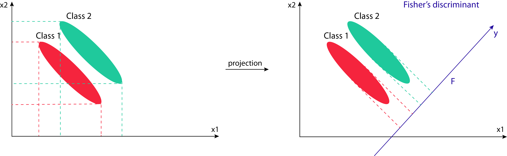

Classification feature optimization
1 General
- Type: - Matrix Processing
- Heading: - Learning
- Source code: not public.
2 Brief description
The classification error in cross-validation is monitored as a function of feature set sizes. Features can be selected according to several feature ranking methods.
3 Parameters
3.1 Items are in
It specifies if the items that should be used for the cross-validation or the prediction can be found in “Columns” or “Rows” (default: Columns).
3.1.1 Classes
Selected categorical row or column that contains the class of the items (default: first categorical row/column in the matrix). If items are in columns then the classes are in a categorical row, and if items are in rows the classes are in a categorical column.
3.1.2 Sub-classes
This parameter is just relevant, if the parameter “Items are in” is set to “Columns”. It specifies whether sub-classes should be taken into consideration for the classification process (default: <None>).
3.1.3 Feature ranking method
This parameter is just relevant, if the parameter “Feature selection” is set to “From feature ranking”. It specifies which features method will be used to rank the features (default: ANOVA). The method can be selected from a predefined list:
- ANOVA
- Hybrid SVM
- MANOVA
- One-sided t-test
- Two-way ANOVA
- SVM
- RFE-SVM
- Golub
Depending on the ranking method up to 4 parameters can be specified.
3.1.3.1 S0
This parameter is just relevant, if the parameter “Feature ranking method” is set to “ANOVA”, “Hybrid SVM”, “One-sided t-test” or “MANOVA”. It defines the artificial within groups variance and controls the relative importance of resulted test p-values and difference between means (default: 0). At \(s0=0\) only the p-value matters, while at nonzero \(s0\) also the difference of means plays a role. See1 for details.
3.1.3.2 C
This parameter is just relevant, if the parameter “Feature ranking method” is set to “Hybrid SVM”, “SVM” or “RFE-SVM”. C is a penalty constant (default: 100). Large C corresponds to large penalties for misclassification and resembles a hard margin classifier.
3.1.3.3 Reduction factor
This parameter is just relevant, if the parameter “Feature ranking method” is set to “Hybrid SVM” or “RFE-SVM”. It defines the factor by what the number of features will be reduced step by step during the ranking process (default: 1.414).
3.1.3.4 Number of top ANOVA features
This parameter is just relevant, if the parameter “Feature ranking method” is set to “MANOVA”. It defines how many of the selected features are top ANOVA features.
3.1.3.5 Side
This parameter is just relevant, if the parameter “Feature ranking method” is set to “One-sided t-test”. It defines the “Left” or “Right” side, where the null hypothesis can be rejected (default: Right).
3.1.3.6 Orthogonal grouping
This parameter is just relevant, if the parameter “Feature ranking method” is set to “Two-way ANOVA”. It defines the grouping of the data according to a given categorical column or row to distinguish the effects of the groups.
3.1.3.7 Min. orthogonal p-value
This parameter is just relevant, if the parameter “Feature ranking method” is set to “Two-way ANOVA”. Test results above this p-value are defined as orthogonal. ( default: 0).
3.1.3.8 Min. interaction p-value
This parameter is just relevant, if the parameter “Feature ranking method” is set to “Two-way ANOVA”. Test results above this p-value are defined as interacting, hence the effects of one group do not depend on the other group (default: 0).
3.1.3.9 Skip if orthog. P-value is better
This parameter is just relevant, if the parameter “Feature ranking method” is set to “Two-way ANOVA”. It defines whether features with an orthogonal p-value better than the given value in “Min. interaction p-value” are filtered out (default: unchecked).
3.1.3.10 Number of features
Defines how many features should be selected (default: 100).
3.1.3.11 Group-wise feature sel.
If checked, for each defined group in the data a different amount of features can be selected, which are then used for the classification (default: unchecked). The numbers can be defined either by typing in the text field in the form [Group,number] or by using the Edit button.
3.2 Classification algorithm
Defines the algorithm that should be used for the classification (default: Support vector machine). The algorithm can be selected from a predefined list:
- Support vector machine
- Fisher LDA
- KNN
3.2.1 Kernel
This parameter is just relevant, if the parameter “Classification algorithm” is set to “Support vector machine”. It defines the kernel function that is used to classify items (default: linear).
The kernel function can be selected from a predefined list:
Depending on the chosen function 1 to 4 parameters must be specified.
3.2.1.1 Sigma
This parameter is just relevant, if “Kernel” is set to “RBF”. It defines the slope of the function (see formula above, default: 1).
3.2.1.2 Degree
This parameter is just relevant, if “Kernel” is set to “Polynomial”. It defines the degree of the polynom (see formula above, default: 3).
3.2.1.3 Gamma
This parameter is just relevant, if “Kernel” is set to “Polynomial” or “Sigmoid”. It defines the slope of the function (see formula above, default: 0.01).
3.2.1.4 Coef
This parameter is just relevant, if “Kernel” is set to “Polynomial” or “Sigmoid”. It defines a constant (see formula above, default: 0).
3.2.1.5 C
This parameter is just relevant, if the parameter “Classification algorithm” is set to “Support vector machine”. C is a penalty constant (default: 10). Large C corresponds to large penalties for misclassification and resembles a hard margin classifier.
3.2.2 Distance
This parameter is just relevant, if the parameter “Classification algorithm” is set to “KNN”. It defines the selected distance that will be used to assign the nearest neighbours to an item and therefore classify it (default: Euclidean). The distance can be selected from a predefined list:
- Euclidean
- L1
- Maximum
- Lp
- Pearson correlation
- Spearman correlation
- Cosine
- Canberra
3.2.3 Number of neighbours
This parameter is just relevant, if the parameter “Classification algorithm” is set to “KNN”. It specifies the number of closest neighbours that are taken into account for the classification of an item (default: 5).
3.3 Cross-validation type
This parameter is just relevant, if the parameter “Cross-validate assigned items” is checked. It defines the type of cross-validation that should be applied to the data set (default: n-fold). The type can be selected from a predefined list:
- Leave one out: As many predictors are built as there are items in the data set. Thus for each predictor one item is left out to train the model and the predictor will be evaluated using the left out item. In the end the average prediction performance will be returned.
- n-fold: The items of the data set are split into n equally sized chunks. n predictors will be generated. In each of these prediction models the union of n-1 of these chunks are taken as the training set and the remaining chunk is the test set. In the end the average prediction performance will be returned.
- Random sampling: The number of predictors is specified by the “Number of repeats” parameter. The number of items taken out to form the test set (and not used for building the predictor) is specified by the “Test set percentage” parameter. In the end the average prediction performance will be returned.
Depending on the cross-validation type 0 to 2 parameters have to specified:
3.3.1 n
This parameter is just relevant, if the parameter “Cross-validation type” is set to “n-fold”. It defines the number of partitions the data is divided into (default: 4).
3.3.2 Test set percentage
This parameter is just relevant, if the parameter “Cross-validation type” is set to “Random sampling”. It specifies the percentage of the data that is used for testing the trained model (default: 15). The remaining data is used for the training process.
3.3.3 Number of repeats
This parameter is just relevant, if the parameter “Cross-validation type” is set to “Random sampling”. It specifies how often the cross-validation process is repeated (default: 250). In every round the data is again divided according to the previously defined percentage.
3.4 Size reduction factor
It defines the factor by what the number of features will be reduced step by step during the ranking process (default: 1.414).
3.5 Max.number of features
Specifies the maximal number of features that are kept after feature selection has been applied (default: 100000).
3.6 Number of threads
Defines the number of threads that should be used for the process (default: 1). The number of threads is limited by number of available cores of the machine Perseus in running on.
3.7 Parameter window

4 Theoretical background
4.1 Support vector machines
Support vector machines (SVMs) were largely developed in the 1990s by Vapnik and co-workers on a basis of a separable bipartition problem at the AT & T Bell Laboratories (see2. SVMs are a family of data analysis algorithms, based on convex quadratic programming, whose successful use has been demonstrated in classification, regression and clustering problems. Thus, SVMs are now the state-of-the-art tools for non-linear input-output knowledge. The following section covers a brief and basic description of SVMs, but detailed explanations can be found in V. N. Vapniks3, N. Cristianinis and J. Shawe-Taylors4, V. N. Vapniks5, V. N. Vapniks6, B. E. Bosers, I. M. Guyons, and V. N. Vapniks7.
SVMs are a particular class of supervised learning methods that are well suited for analyses of data in high-dimensional feature spaces. They are computationally efficient and capable of detecting biologically-relevant signals. SVMs revolve around the notion of a margin - either side of a data separating linear decision boundary (hyperplane). Maximizing this margin and thereby creating the largest distance between two classes as well as between the hyperplane and the instances on either side, is the main task in training SVMs (see figure below). Thus, these models have a binary nature to separate classes, but can be extended to multi-class problems by reducing the problem to a set of multiple binary classification problems. The hyperplane is defined by:
where \(ω\) is the weights vector and \(b\) is a bias value (or \(−b\) the threshold).
In case an optimal separating hyperplane is found, data points on the margin are known as support vectors and the solution is a linear combination of them (red data points in figure below). Each new data point is then classified according to its optimal position relative to the model’s hyperplane. So the model complexity is unaffected by the number of features encountered in the training data, therefore SVMs are well suited to deal with learning tasks with a large number of features compared to the number of data points. In case no hyperplane can be found, the problem can be addressed using the so-called soft margin. The margin optimization constraints can be relaxed by allowing some misclassifications or margin violations in the training set, to get better generalization of the SVM than using a hard margin. The choice of appropriate penalties is mandatory:
where \(\omega\) is the weights vector, \(b\) is a bias value, \(C\) is a penalty constant, and \(\xi\) is a slack variable, which is the orthogonal distance between a data point and the hyperplane. Large C correspond to large penalties for misclassification and resemble a hard margin classifier, whereas \(\xi\) measures the degree of misclassification or margin violation. This is a good way to deal with outliers in the data set without destroying the model by tailoring it perfectly to the input data.
Nevertheless, most real-world data sets involve separation problems that are linearly non-separable, which requires the definition of complex functions to build a good classifier. SVMs use kernels, a special class of functions to deal with such situations. Mapping the data points to a higher-dimensional space (transformed feature space) using kernels, enables the definition of a linear hyperplane, which results in a non-linear hyperplane in the original space. The hyperplanes in the higher-dimensional space are represented by all points defining a set, whose inner product with a vector is constant in that space. Training the classifier depends only on the data through dot products, which are possible to compute even at a high-dimension at low cost by applying the so-called kernel trick. The trick lies in working in an higher-dimensional space, without ever explicitly transforming the original data points into that space, but instead relying on algorithms that only need to compute inner products within that space. These algorithms are identical to kernels and can thus be cheaply computed in the original space. So, everything about linear cases can also be applied to non-linear ones using an appropriate kernel function. It is common practice to find the best suiting function by cross-validation. Some popular kernels, which are all included in Perseus, are:
where \(x\) and \(y\) are two data points, \(\gamma\) is the slope, \(d\) is the degree of the polynom, and \(r\) is a constant.

For more information you can also consult Wikipedia.
4.2 Fisher’s linear discriminant analysis
Linear Discriminant Analysis (LDA), is a well-known classification technique that has been used successfully in many statistical pattern recognition problems. It was developed by R.A. Fisher, a professor of statistics at University College London, and is sometimes called Fisher Discriminant Analysis (FDA). Its first description was in 1936 and can be found in8.
The primary purpose of LDA is to separate samples of two or multiple distinct groups while preserving as much of the class discriminatory information as possible to classify new unseen instances. The approach of the LDA is to project all the data points into new space, normally of lower dimension, which maximizes the between-class separability while minimizing their within-class variability. So the goal is to find the best projection axes for separating the classes. In general the number of axes that can be computed by the LDA method is one less than the number of classes in the problem.

For more information you can also consult Wikipedia.
4.3 k-nearest neighbors
K-Nearest Neighbors (kNN) is a simple lazy learner algorithm that stores all available data points and classifies new instances based on a similarity measure (e.g., distance functions). It corresponds to the group of supervised learning algorithms and has been used in statistical estimation and pattern recognition already in the beginning of 1970’s as a non-parametric technique. During the training phase the algorithm simply stores the data points including their class labels and all computation is deferred until the classification process. So kNN is based on the principle that instances that are in close proximity to another have similar properties. Thus, to classify new unclassified instances, one simply has to look at their k-nearest neighbors, to figure out the classification label. The class membership can be defined by a majority vote of the k closest neighbors or the neighbors can be ranked and weighted according to their distance to the new instance. A common weighting scheme consists in giving each neighbor a weight of 1/d, where d is the distance to the neighbor.

For more information you can also consult Wikipedia.